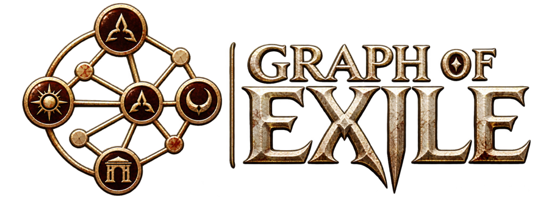
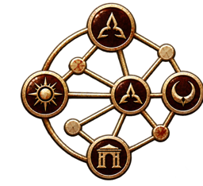

Graph of Exile is a fan-made knowledge graph of Path of Exile lore — from the Precursors and the Vaal to the Eternal Empire, both campaigns, the Atlas and every league storyline — centred on the Exile. Every node and edge cites its sources; the dataset (JSON, CSV, GraphML) is on GitHub.
Labels. Main plot is the Exile's critical path · Endgame plot is the Atlas storyline · Branch is league or side-quest lore · Background is deep history · Meta covers acts and leagues as containers.
Disclaimer. Path of Exile 2 is in Early Access. Content tagged datamined (pre-1.0) comes from game-file datamines of the unreleased Acts 5–6 and may change; the dataset will be updated once PoE2 1.0 is released. Lore was compiled with AI assistance from community wikis, in-game text and lore videos, then cross-verified, but errors can remain — please report them on GitHub.
Path of Exile is a trademark of Grinding Gear Games. This project is not affiliated with or endorsed by Grinding Gear Games. Wiki-derived text is licensed CC BY-NC-SA 3.0 like its sources (poewiki.net, poe2wiki.net).
GitHub repository & dataset ↗